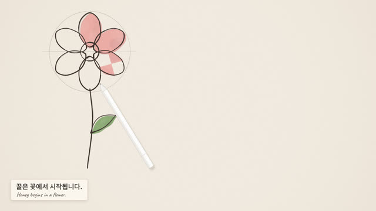
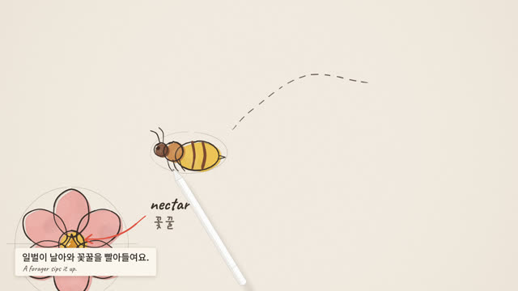
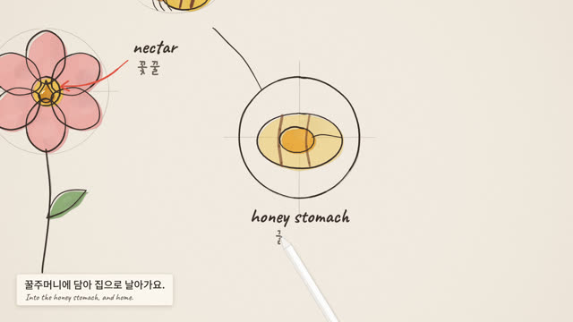
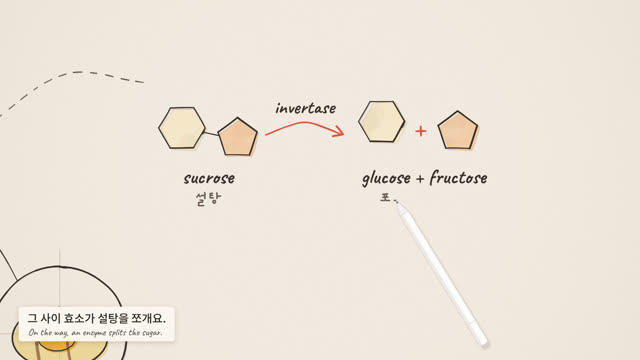
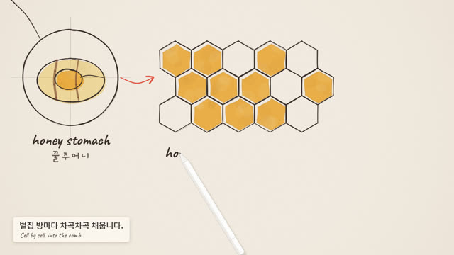
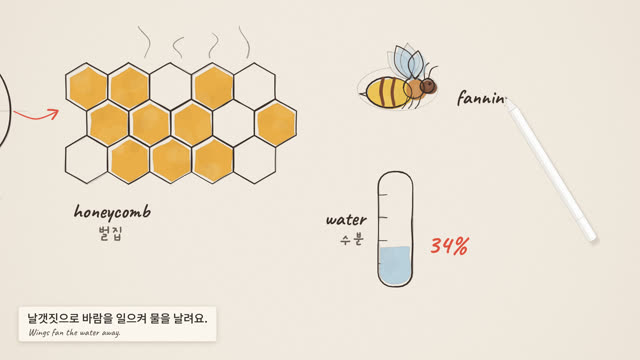
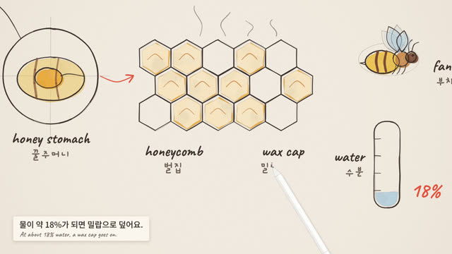
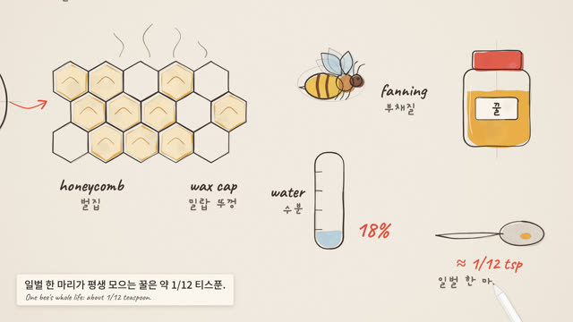
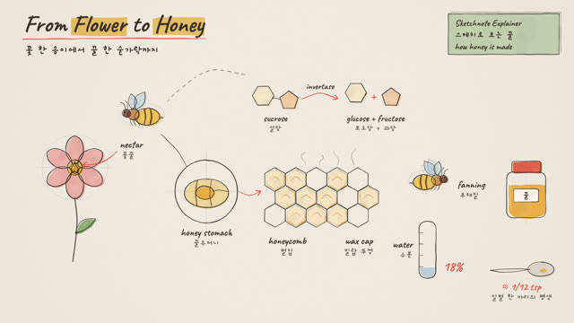

작업 흐름
- 입력
- 주제 하나(꿀이 만들어지는 과정, 물의 순환, 커피 한 잔이 오기까지 …)와 자막 · 라벨에 쓸 두 언어
- 브리프
- 주제마다 새로 쓰는
BRIEF.md: 남길 한 문장, 출처를 확인한 숫자, 비트 6–12개(그림 하나와 두 줄 자막씩), 마지막 한 장의 배치도, 키트에 없어 새로 그릴 그림, 스틸 검토 기준 - 그림
- 비트마다 흐린 보조선 → 연필선 → 살짝 어긋난 수채 → 손글씨 라벨과 빨간 화살표 · 숫자를 그리는 흰 스타일러스, 그 그림으로 미끄러지며 다가가는 카메라, 주제에 맞게 새로 그린 그림(예제의 꿀벌, 설탕 분자, 밀랍 뚜껑)
- 확인
- 그림 겹침, 시트 밖 요소, 자막 카드에 가린 그림, 전체 화면에서 읽히는 글씨 크기, 결정성, 사운드트랙을 잡는 자동 점검과 콘택트 시트
- 출력
- 30fps MP4(1920×1080, 1080×1440, 1080×1920)와 사운드트랙 WAV, 클릭하면 소리가 나는 라이브 페이지
cd sketchnote-explainer/examples/honey
node ../../scripts/check.mjs index.html
node ../../scripts/render.mjs index.html --sheet 16 --scale .5
node ../../scripts/render.mjs index.html --workers 4
node ../../scripts/new-film.mjs ../../../my-film # BRIEF.md부터요구 사항: Node + Playwright Chromium, ffmpeg. 네트워크가 필요 없습니다(1920×1080 한 프레임 약 0.1초, 69초 예제를 워커 4개로 약 3분 20초). 단계별 순서는 SKILL.md에 있습니다.
샘플
예제 「From Flower to Honey · 꽃에서 꿀까지」의 비트들과, 같은 엔진으로 주제와 화면비를 바꾼 템플릿, 그림 키트입니다. 카드를 누르면 새 탭에서 그 순간에 멈춘 장면이 열리고, 브라우저가 선 하나부터 직접 그립니다.
From Flower to Honey · 꽃에서 꿀까지 16:9 · 69초 · 10비트 + 마무리
레퍼런스(커피 열매에서 한 잔까지)에 없는 주제를 브리프부터 새로 설계한 예제입니다. 숫자(꽃꿀의 물 80%, 꿀의 물 약 18%, 일벌 한 마리 평생 약 1/12 티스푼)는 출처를 확인해 BRIEF.md에 적었고, 꿀벌 · 설탕 분자 · 밀랍 뚜껑은 이 주제를 위해 새로 그렸습니다.









The Water Cycle · 템플릿과 그림 키트 3:4 · 28초 · 5비트 + 마무리
같은 엔진으로 주제와 화면비(세로 3:4)를 바꾼 출발점과, 키트의 그림 전부입니다. 템플릿의 강은 페이지 안에서 defineSketch로 새로 그렸습니다.
실제 작품
이 레포에서 만든 스킬입니다. Eian이 X에 "샤오홍슈에 딱 맞는 지식 설명 스타일"이라며 공유한 Lemomo의 「iPad Sketch Explainer」 영상(커피 열매에서 한 잔까지, 51초)이 출발점입니다. 이 스킬은 그 화면의 문법(종이 위 연필선과 어긋난 수채, 손글씨 라벨, 두 줄 자막, 그림 사이를 오가는 카메라, 한 장으로 물러나는 마무리)만 가져오고, 엔진과 예제의 주제 · 배치 · 그림 · 소리는 모두 이 레포의 것입니다.
링크
- SKILL.md 워크플로
- 폴더 lib · scripts · templates · references · examples
- README.md 빠른 시작
- references/BRIEF.md 고정되는 스타일과 주제마다 새로 설계하는 것, 브리프 틀, 스틸 검토 기준
- references/LOOK.md 레퍼런스처럼 보이게 하는 것: 종이, 연필, 수채, 글씨, 스타일러스, 카메라, 자막
- references/BEATS.md 주제 → 비트 → 마지막 한 장, 배치 공식
- references/KIT.md API와 그림 목록, 직접 그리는 그림
- references/LESSONS.md 겪은 문제와 해결